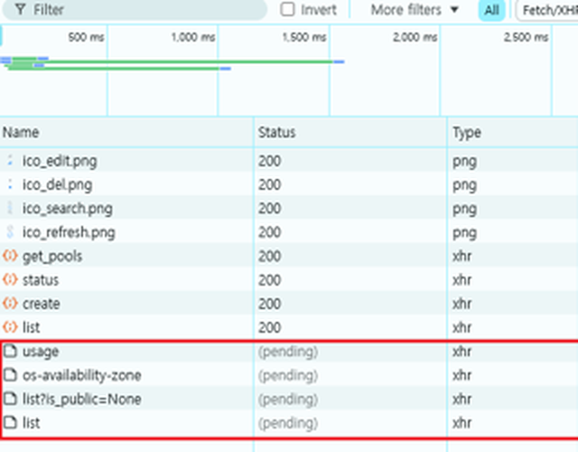

사내 Cloud 관리 Console을 만들고 있습니다. 볼륨 목록 화면에서 ‘볼륨 생성’ 버튼을 눌러도 창이 안 열리고 동그라미만 돌았습니다.
버튼이 안 먹는 것처럼 보이니 화면 쪽 문제로 읽힙니다. 반은 맞았습니다. 개발자 도구를 열어 보니
요청 네 건이 (pending)으로 멈춰 있었고 원인은 양쪽에 하나씩 있었습니다.
화면 쪽 원인은 창을 열 때 고르지도 않은 것까지 미리 다 받아 오는 것입니다. Backend 쪽 원인은 그 목록 조회가 10s 넘게 걸리는데 화면이 5s마다 다시 부르는 것입니다. 앞이 안 끝났는데 뒤가 또 들어옵니다.
그래서 둘을 같이 고쳤습니다. 창이 열려 있는 동안에는 갱신을 멈추고 고른 것만 그때 받아 오게
했습니다. 그리고 이 ‘5s’가 뒤에 Backend 결정의 근거가 됩니다.
①편에 나온 refreshAfterWrite(5s)의 그 5s입니다.
이 글의 예상 독자#
- 목록 화면에 주기적 갱신(Polling)을 걸어 두신 분
- 창을 열 때 필요할 것 같은 데이터를 미리 받아 두시는 분
- 화면 증상을 보고 어느 쪽이 원인인지 갈라야 했던 적이 있는 분
어떤 화면인가요?#
볼륨 목록을 보여 주고 위쪽에 ‘볼륨 생성’ 버튼이 있는 화면입니다. 이 화면에서는 목록 갱신과 생성 창의 사전 조회가 같이 돕니다.
- 목록은 5s마다 스스로 다시 받아 옵니다. 상태가 바뀌는 자원이라 가만히 둬도 최신으로 보이게 하려는 것입니다. 이런 주기적 재조회를 Polling이라고 합니다.
- 버튼을 누르면 생성 창이 열립니다. 그 창에는 볼륨 소스를 고르는 칸이 있습니다.
증상: 눌러도 안 열립니다#
버튼을 누르면 창이 뜨다 말고 동그라미만 돕니다. 에러도 안 뜹니다. 기다리면 열릴 때도 있고 안 열릴 때도 있습니다.
개발자 도구를 열어 보면 답이 그대로 있습니다.

req-A처럼 가렸고
제품 화면이 찍힌 오른쪽은 잘라 냈습니다. 상태·종류·시각은 갈무리 그대로입니다.(pending)은 아직 끝나지 않았다는 뜻입니다. 어디서 기다리는 중인지는
이 화면에 안 나옵니다. 브라우저 안에서 순서를 기다리는 중일 수도, 보내 놓고 답을 기다리는 중일
수도 있습니다.
즉 클릭은 처리됐습니다. 창은 뜨기 시작했고 뜨는 데 필요한 것을 받는 중에 멈춰 있었습니다.
이 갈무리가 보여 주는 것은 거기까지입니다. 어느 것이 주기적 갱신이고 어느 것이 창의 요청인지, 각각이 언제 시작해 어디서 얼마를 기다렸는지는 이 화면만으로는 가르지 못합니다. 아래에 적는 두 원인은 이 갈무리 하나가 아니라 코드와 사내 기록에서 나온 것입니다.
원인 ①: 안 쓸 것까지 미리 다 받아 왔습니다#
창을 여는 과정에서 받아 오는 것이 4가지였습니다. 볼륨 목록, 볼륨 스냅샷 목록, 이미지 목록, 그리고 볼륨 타입 목록. 앞의 셋은 차례로 불렀고 볼륨 타입은 따로 불렀습니다. 한꺼번에 나란히 나간 것이 아닙니다.
그런데 창을 여는 데 그 4가지가 다 필요하지는 않습니다. 볼륨 소스로 ‘볼륨’을 고르면 볼륨 목록이 필요하고 ‘이미지’를 고르면 이미지 목록이 필요합니다. 고르기 전에는 볼륨·스냅샷·이미지 목록 중 어느 것도 필요하지 않습니다.
필요할 것 같아서 미리 받아 두는 것을 over-fetching이라고 부릅니다. 받아 두면 나중에 빠르니까 이득처럼 보이는데 그 ‘나중’이 오기 전에 창이 안 열리면 이득이 아닙니다.
원인 ②: 창이 열려 있는 동안에도 5s마다 불렀습니다#
여기가 이 글의 가운데입니다.
목록 화면은 5s마다 전체 볼륨 목록을 다시 받아 옵니다. 그런데 그 갱신이 창이 열려 있는 동안에도 그대로 돌았습니다. 멈추라고 한 곳이 없었으니까요.
그리고 그 전체 목록 조회는 10s 넘게 걸렸습니다. 그러면 앞의 것이 안 끝났는데 다음 것이 나갑니다.
10s 걸리는 것을 5s마다 부르면 겹칩니다. 앞의 것이 안 끝났는데 다음 것이 나가니, 같은 요청이 동시에 두 건씩 떠 있게 됩니다.
여기서 한 발 더 나가면 근거가 없어집니다. ‘요청이 끝없이 쌓인다’가 되려면 2가지가 더 있어야 하는데 둘 다 이 기록으로 확인되지 않습니다.
- 갱신이 고정 시계로 돌아야 합니다. 앞의 것이 끝난 뒤에 5s를 재는 구현이거나
아직 도는 중이면 건너뛰는 구현이면 겹치지 않습니다. 기록에 남은 것은
usePolling을 부르는 쪽이고 그 안이 어떻게 생겼는지는 없습니다. - 겹친 요청이 어딘가에서 한 줄로 서야 합니다. 그냥 나란히 나가면 동시에 떠 있는 수가 2건 근처에서 멈추고 계속 늘지 않습니다. 브라우저가 같은 서버로 여는 연결 수 상한이 그 자리일 수 있는데 확인하지 않았습니다.
그러니 이 글이 말할 수 있는 것은 겹친다까지입니다. 사내 기록은 이것을 ‘누적’이라고 적었고 저도 그때 그렇게 읽었습니다. 지금 다시 보면 그 낱말은 확인한 것보다 셉니다.
그리고 같은 시점에 창을 열기 위한 요청도 함께 나갑니다. 원인 ①입니다. 그 요청들이 갱신 요청 뒤에서 기다렸다는 직접 증거는 없습니다. 갈무리에는 각 요청이 언제 시작했는지도, 어디서 얼마를 기다렸는지도 안 나옵니다.
브라우저가 같은 서버로 동시에 열 수 있는 연결 수에도 상한이 있습니다.
줄이 길어지면 그 상한에도 걸릴 수 있는데 이 글은 그것까지 확인하지 않았습니다.
확인한 것은 (pending) 4건이 남아 있었다는 것까지입니다.
수정: 창이 열려 있으면 멈추고 고를 때 받습니다#
두 원인이 따로였으니 수정도 둘입니다.
하나. 창이 열려 있는 동안 갱신을 멈춥니다.
// 열려 있는 창이 하나라도 있으면 polling을 멈춘다
const isAnyDialogOpen = Object.values(openDialogs).some(Boolean);
usePolling({
callback: () => refetchVolumes(),
pollingCondition: isLoadingDataExist && !isAnyDialogOpen,
});이 조건이 막는 것은 다음 갱신이 나가는 것입니다. 이미 나가 있는 요청을
취소하지는 않습니다. 그리고 openDialogs가 클릭 직후에 참이 되는지, 데이터를 다 받은
뒤에 참이 되는지는 부르는 쪽 코드만으로는 알 수 없습니다.
둘. 미리 받지 않고 고를 때 받습니다. 볼륨 소스에서 ‘스냅샷’을 고르면 그때 스냅샷 목록만 받아 옵니다. 이미 받아 둔 것은 다시 받지 않습니다.
const loadSourceData = async (sourceValue: string) => {
if (sourceValue === 'volume' && volumeSelectItems.length === 0) {
// 「볼륨」을 고른 그때, 볼륨 목록만
} else if (sourceValue === 'snapshot' && snapshotSelectItems.length === 0) {
// 「스냅샷」을 고른 그때, 스냅샷 목록만
}
...
};필요할 때 받아 오는 이 방식을 lazy loading이라고 합니다. 고른 값에 따라 요청이 꼭 1건인 것은 아닙니다. ‘이미지’나 ‘빈 볼륨’을 고르면 볼륨 타입 목록도 같이 필요해서 한 번 더 나갑니다.
덤: 목록을 못 받아도 선택지는 보이게#
고치다 보니 하나가 더 눈에 띄었습니다. 소스 종류의 선택지 자체를 API 응답으로 만들고 있었습니다. 그래서 그 호출이 실패하면 고를 것이 아무것도 안 보였습니다.
선택지는 볼륨·스냅샷·이미지·빈 볼륨 넷으로 정해져 있습니다. 서버에 물어볼 것이 아닙니다. 고정된 배열로 바꿨습니다.
바뀌지 않는 값을 서버에서 받아 오면 그 호출이 실패했을 때 화면도 같이 못 씁니다. 이제 목록을 못 받아도 선택지는 보이고 못 받은 것은 그 항목에서만 드러납니다.
이 5s가 Backend 결정의 근거가 됐습니다#
같은 날 Backend 쪽에서 볼륨 목록 Cache의 갱신 주기를 정해야 했습니다.
①편에 나온 refreshAfterWrite(5s)입니다.
그 5s가 여기서 왔습니다. 화면이 5s마다 목록을 다시 부르고 있으니, Cache 갱신을 시작하는 기준도 그 주기에 맞추자는 것이었습니다. 팀에서 그렇게 합의했습니다.
그것이 ‘5s 안에 반드시 최신이 된다’는 뜻은 아닙니다.
①편에 적었듯 refreshAfterWrite는
상한이 아니라 갱신을 시작하는 조건이고 아무도 안 찾으면 갱신도 안 일어납니다.
여기서 정한 것은 주기를 어디에 맞출까였지 낡음의 천장이 아니었습니다.
프런트의 갱신 주기가 Backend의 낡음 허용치를 정했습니다. 따로 정할 수 있는 값이 아니라 한쪽이 다른 쪽의 근거였습니다.
그럼 어느 쪽을 고쳐야 했나#
‘Backend가 10s 걸리는 게 문제 아닌가’가 당연한 질문입니다. 맞습니다. 그리고 그것만 고쳐도 안 됐습니다.
가로로 스크롤하면 나머지가 보입니다
증상은 한 곳에서 났는데 원인이 양쪽에 하나씩 있었습니다. 같은 날 두 사람이 아니라 같은 사람이 양쪽을 고쳤고 그래서 5s가 이어졌습니다.
한계: 이 글이 주장하지 않는 것#
- ‘요청이 쌓였다’까지는 확인하지 못했습니다. 갈무리가 보여 주는 것은 그 시점에 끝나지 않은 요청이 네 건이라는 것까지이고 창이 열리는 시간도 전후로 재지 않았습니다.
- 사내 제품이라 화면과 코드를 그대로 옮기지 않았습니다. 제품명·고객사·내부 주소는 빼고 구조만 남겼습니다. 제품 화면이 찍힌 갈무리는 쓰지 않았고 개발자 도구 창만 잘라서 씁니다.
- 창이 열리는 데 걸린 시간을 전후로 재지 않았습니다. 기록에 남은 것은 ‘클릭하면 바로 열린다’는 문장이고 그건 눈으로 본 것입니다. 몇 초가 몇 초가 됐다고 말할 수 없습니다.
- ‘10s 이상’은 원본의 문장입니다. 어떻게 잰 값인지 적혀 있지 않습니다.
(pending)4건 갈무리는 1회 관측입니다. 그 순간 그랬다는 것이고 매번 4건이었다는 뜻이 아닙니다.- Polling을 멈추는 데는 대가가 있습니다. 창이 열려 있는 동안 뒤의 목록은 낡습니다. 창을 오래 띄워 두면 닫았을 때 한 번 튀어 보일 수 있습니다. ⚠️ 원본에는 이 대가가 적혀 있지 않고 저도 그때 따로 재지 않았습니다.
- 연결 수 상한에 걸렸는지는 모릅니다. 줄이 길어지면 브라우저가 같은 서버로 동시에 여는 연결 수 상한에도 걸릴 수 있는데 확인하지 않았습니다.
- 프런트 수정이 Backend를 고친 것은 아닙니다. 목록 조회가 오래 걸리는 것은 ①편에서 따로 고쳤습니다. 이 글은 그 위에서 창이 왜 안 열렸는지만 다룹니다.
마치며#
- 주기를 정할 때는 가장 느린 응답을 같이 봐야 합니다. 10s 걸리는 것을 5s마다 부르면 같은 요청이 겹칩니다.
- Polling에는 멈추는 조건이 필요합니다. 화면이 앞에 없거나 창이 열려 있으면 안 불러도 됩니다.
- 미리 받아 두는 것은 공짜가 아니고 바뀌지 않는 선택지는 서버에 묻지 않습니다. 앞의 것은 같은 시점에 요청을 늘리고 뒤의 것은 서버가 죽을 때 같이 못 씁니다.
- 한쪽 수치가 다른 쪽 결정의 근거가 됩니다. 프런트의 5s가 Backend Cache의 갱신 주기를 맞추는 기준이 됐습니다.
증상이 한 곳에서 났다고 원인도 한 곳에 있는 것은 아닙니다. 창은 프런트에서 안 열렸는데 안 열린 이유의 절반은 Backend에 있었습니다.
다음 편은 모니터링 화면을 검토하고도 고칠 근거를 못 찾은 이야기입니다. 거기서 예상한 평평한 그래프를 왜 돌려서 확인하지 않았는지도 적습니다.
읽어 주셔서 감사합니다.